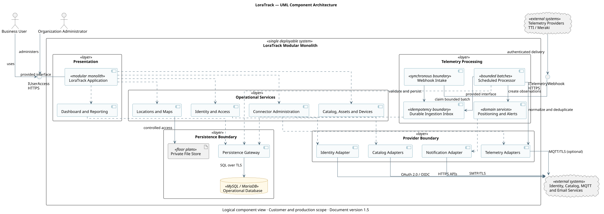

Document version: 1.5
Classification: Public product documentation
| Field | Value |
|---|---|
| Product | LoraTrack |
| Document type | Customer Technical and User Guide |
| Document version | 1.5 |
| Audience | Users, administrators, engineering, operations, and security teams |
This documentation describes product capabilities and procedures. References to practices or standards do not constitute certification, independent assurance, or formal customer acceptance.
LoraTrack provides a governed inventory and location platform for physical assets in industrial indoor and outdoor environments. It combines product catalogs, asset identity, device assignments, IoT telemetry, floor plans, location estimates, alerts, and operational history in a single multi-organization application.
The platform is intended to improve asset visibility, reduce manual location searches, preserve chain-of-custody evidence, and provide a consistent operational record across catalog, telemetry, and location workflows.
LoraTrack is designed to support the following outcomes:
Realized benefits depend on device coverage, floor-plan quality, calibration, integration availability, user adoption, and agreed operating procedures.
| Area | Current state | Executive interpretation |
|---|---|---|
| Core inventory and assets | Implemented | Available for controlled operational use after environment validation. |
| Organization isolation and roles | Implemented and covered by automated tests | Requires customer access reviews and role ownership. |
| TTI, MQTT, and Meraki telemetry | Implemented | Requires provider configuration, credentials, monitoring, and capacity validation. |
| Catalog integrations | SAP, Business Central, Shopify, Odoo, and CSV adapters implemented | Provider permissions and supported API versions must be validated per deployment. |
| Positioning | RSSI-based estimation, calibration, confidence, and history implemented | Accuracy remains environment-dependent and must be field-validated. |
| Deployment and operations | Documented for Linux and Windows | Production readiness depends on backup, recovery, monitoring, TLS, and operational ownership. |
| Formal certification | Not claimed | Certification requires independently verified organizational and technical evidence. |
LoraTrack is delivered as a modular Laravel 12 monolith. This provides one controlled application deployment while preserving logical boundaries among catalog, assets, devices, locations, connectors, telemetry, positioning, dashboard, and identity capabilities.
The production operating model requires:
Deferred telemetry and catalog processing is performed by scheduled Laravel commands. A persistent Laravel Queue worker is not required.
organization_id and active membership.These application controls must be complemented by infrastructure hardening, access reviews, supplier management, incident response, backup governance, continuity planning, training, and evidence retention.
| Risk | Business impact | Required treatment | Accountable role |
|---|---|---|---|
| Inadequate anchor coverage or calibration | Incorrect or unavailable asset positions | Conduct site survey, calibration, acceptance testing, and periodic revalidation. | Operations and engineering owner |
| Scheduler, connector, or provider interruption | Delayed telemetry and stale dashboard information | Monitor backlog and last activity; define alerting and recovery procedures. | Platform operations owner |
| Uncontrolled retention growth | Increased storage cost and degraded performance | Approve retention periods, capacity thresholds, archival, and deletion rules. | Data and service owner |
| Credential exposure or excessive access | Unauthorized data or integration access | Apply least privilege, rotation, access reviews, and protected secret storage. | Security and application owner |
| Untested backup or recovery | Extended outage or permanent data loss | Define RPO/RTO, automate backups, and test restoration on a schedule. | Infrastructure and continuity owner |
| Provider or API change | Integration failure or incomplete catalog/telemetry data | Pin supported contracts, monitor provider changes, and maintain contract tests. | Integration owner |
| Misrepresentation of positioning accuracy | Unsafe or incorrect operational decisions | Publish confidence and limitations; prohibit life-safety or certified-metrology claims. | Product and operational owner |
Production approval should define targets and reporting ownership for at least:
Numeric targets must be approved for each customer environment after baseline and field testing; this document does not invent universal SLA or accuracy commitments.
Executive sponsors and service owners must approve:
| Control | Requirement |
|---|---|
| Document owner | LoraTrack Product Engineering |
| Business approver | Designated customer executive sponsor or service owner |
| Operational approver | Designated platform operations owner |
| Status | Public product documentation; approval evidence remains deployment-specific |
| Review cycle | At each published product-documentation change and at least annually |
| Version control | The public document version is maintained in docs/VERSION and incremented whenever published content changes |
LoraTrack provides a coherent technical foundation for governed asset inventory and location workflows. Production suitability cannot be determined from application controls alone. Approval requires deployment-specific evidence, field accuracy validation, service ownership, measurable targets, accepted residual risk, and demonstrated backup and recovery capability.
This UML component diagram presents the complete logical architecture visible to a customer planning, integrating, securing, and operating LoraTrack. It shows responsibilities and information flows without exposing source-code structure or development tooling.
LoraTrack is a modular monolith: all modules shown inside the system boundary form one deployable application. The internal boundaries separate responsibilities and provider contracts; they do not represent independently deployed microservices.

| Area | Responsibility |
|---|---|
| User access | Provides authenticated browser access for business users and organization administrators. |
| Identity and access | Authenticates local or Microsoft identities and enforces organization membership and role authorization. |
| Asset operations | Manages products, physical assets, tracking devices, assignments, locations, maps, and zones. |
| Integration management | Configures and supervises telemetry and catalog connectors without exposing stored credentials. |
| Telemetry intake | Validates and durably accepts provider events before deferred processing. |
| Scheduled processing | Normalizes, deduplicates, creates observations, calculates positions, evaluates alerts, synchronizes catalogs, and applies retention policies. |
| Operational reporting | Presents current state, history, maps, alerts, and connector health from normalized application data. |
| Persistence | Stores tenant-isolated operational records, private files, audit evidence, and durable ingestion buffers. |
The editable UML source is provided in system-component-diagram.puml.
This guide describes the functional use of LoraTrack for administrators, supervisors, operators, engineering personnel, and read-only users. Available options depend on the user role and active organization.
Access is always restricted to the active organization. Users who belong to multiple organizations must verify the selected context before viewing or modifying information.
A product is a catalog definition; an asset is an individual physical unit. A SKU must not be used as the unique identifier of an asset.
When creating or editing an asset:
Assignments are historical records. To replace a device, close the current assignment and create a new one without altering prior records.
Devices must be registered with their actual technical identifier. Fixed scanners and beacons require an active installation associated with a location or floor plan. Before relying on a position:
Floor plans are stored privately. To configure a floor plan:
Do not mix geographic coordinates with local floor coordinates.
Connectors are separated into telemetry and catalog integrations. The recommended administrative workflow is:
Stored credentials are never displayed again. They must be changed through an explicit rotation procedure.
Receiving telemetry does not guarantee that a position can be calculated. A position may remain unknown or have low confidence when anchors, coordinates, calibration data, or sufficient signal evidence are unavailable.
When investigating an asset:
Administrators and supervisors configure rules and authorized recipients. Every alert must be reviewed together with its evidence and observation time. An alert must not be interpreted as a guarantee of physical accuracy.
The operational health view reports failed or delayed telemetry, connector status, floor plans, pending scanners, and recent records. The scheduler must run every minute for deferred processing to advance.
Before escalating an incident, record:
Technical procedures for diagnostics, backup, restoration, and continuity are provided in the deployment guide and operations runbook.
Table: connectors
Conceptual fields:
If a connector is disabled, queued telemetry is not processed. The job marks those events as ignored.
TTI responsibilities:
LoraTrack responsibilities:
Minimum contract:
{
"end_device_ids": {
"device_id": "tracker-01",
"dev_eui": "0011223344556677"
},
"received_at": "2026-07-10T11:24:49Z",
"uplink_message": {
"f_cnt": 42,
"f_port": 1,
"received_at": "2026-07-10T11:24:49Z",
"decoded_payload": {
"beacons": [
{"mac": "AA:BB:CC:DD:EE:01", "rssi": -76}
]
}
}
}
uplink_message.received_at is preferred for identity and observed_at when present.
Command:
php artisan loratrack:mqtt-listen
The listener connects to the broker configured in the connector. It must be supervised by systemd, Supervisor, Task Scheduler, or an approved equivalent.
MQTT does not bypass queue processing. Messages are converted to events and follow the normal telemetry flow.
Routes:
GET /api/v1/ingest/meraki/{connector}
POST /api/v1/ingest/meraki/{connector}
The integration includes receiver validation, normalization, access point registration, and Meraki-to-internal floor plan mapping.
The connector targets the Product Master API. Configuration includes:
The adapter must not leak SAP entities such as A_Product outside the connector. Normalization produces internal products and SKUs.
These connectors import products and normalize them into internal catalog records. They must respect:
CSV is a controlled manual import mechanism.
Connection tests must:
Each integration should document:
This document summarizes relevant HTTP routes for integrations, operations, and visualization. It is not a formal OpenAPI specification, but it provides a review baseline for engineering teams.
/api/v1.POST /api/v1/ingest/tti/{connector}
Headers:
Authorization: Bearer {webhook_token}
Content-Type: application/json
Accept: application/json
Minimum payload:
{
"end_device_ids": {
"device_id": "tracker-01",
"dev_eui": "0011223344556677"
},
"uplink_message": {
"f_port": 1,
"f_cnt": 42,
"received_at": "2026-07-10T11:24:49Z",
"decoded_payload": {
"beacons": [
{"mac": "AA:BB:CC:DD:EE:01", "rssi": -76},
{"mac": "AA:BB:CC:DD:EE:02", "rssi": -78},
{"mac": "AA:BB:CC:DD:EE:03", "rssi": -80}
]
}
}
}
Accepted response:
{
"accepted": true,
"duplicate": false,
"event_id": "01...",
"request_id": "..."
}
Status codes:
202: accepted.401: invalid token.404: connector not found, inactive, or wrong provider.413: payload larger than 1 MB.422: validation failure.429: throttled.Receiver validation:
GET /api/v1/ingest/meraki/{connector}
Reception:
POST /api/v1/ingest/meraki/{connector}
The connector must be active and configured. Internal normalization produces telemetry_events, signal_observations, access point devices, and positions when mapping is sufficient.
Authenticated Meraki POST requests are stored in a durable, idempotent inbox and receive 200 OK before normalization. The shared secret is removed before persistence. schedule:run processes pending inbox records, normalizes and deduplicates observations, creates telemetry events, records connector activity, and dispatches downstream observation processing.
Rejected Meraki POST requests are recorded separately from accepted telemetry. LoraTrack retains only the 10 most recent rejections per connector with the HTTP status, sanitized reason, declared version/type, request ID, and a keyed hash of the source IP. Shared secrets and complete request payloads are never stored in this diagnostic history. These records do not increment the failed telemetry counter because no telemetry_event was accepted.
The connector detail counters link to filtered accepted telemetry (received, processed, pending, or failed) or to the separate rejected-request history.
GET /map/{floorPlan}/data
Authorization:
maps.view permission.Conceptual response:
{
"anchors": [
{
"id": "01...",
"name": "Beacon A",
"identifier": "AABBCCDDEE01",
"type": "beacon",
"x": 0.1,
"y": 0.2
}
],
"positions": [
{
"asset_id": "01...",
"name": "Pump 01",
"x": 0.5,
"y": 0.4,
"x_meters": 5.0,
"y_meters": 4.0,
"confidence": 0.91,
"accuracy_meters": 1.2,
"calculated_at": "2026-07-10T11:24:50Z",
"evidence": []
}
]
}
View:
GET /assets/{asset}/track
Data:
GET /assets/{asset}/track/data?floor_plan_id={id}&range=24h
Parameters:
floor_plan_id: optional.range: 1h, 24h, 7d, 30d.from: optional date.to: optional date.after: optional incremental update date.The response contains asset metadata, floor plan metadata, and historical position_estimates.
Admin web routes:
GET /connectorsGET /connectors/{connector}GET /connectors/create/{provider}POST /connectorsPOST /connectors/{connector}/testPOST /connectors/{connector}/togglePOST /connectors/{connector}/rotate-webhook-tokenPOST /connectors/{connector}/syncPOST /connectors/{connector}/csvSecrets must not be returned in full to the browser after storage.
Relevant routes:
GET /floor-plansGET /floor-plans/{floorPlan}/fileGET /floor-plans/{floorPlan}/modelPOST /floor-plansPUT /floor-plans/{floorPlan}POST /floor-plans/{floorPlan}/zonesPOST /floor-plans/{floorPlan}/installationsPUT /installations/{deviceInstallation}Mutation permission:
plans.manage
Relevant routes:
GET /assetsGET /assets/{asset}/photoPOST /assetsPUT /assets/{asset}POST /assets/{asset}/assignmentsDELETE /asset-assignments/{assignment}POST /assets/{asset}/refresh-positionMutation permission:
assets.manage
For investigations, correlate:
X-Request-ID when present;telemetry_events.id;connectors.id;jobs.uuid when applicable;observed_at, received_at, and processed_at;LoraTrack supports:
A user account does not define effective authorization by itself. Effective authorization depends on the user's membership in the active organization.
Roles defined in App\Enums\UserRole:
| Role | Capabilities |
|---|---|
| admin | Full access, connectors, users, and security administration. |
| engineer | Floor plans, anchors, calibration, decoders, and technical diagnostics. |
| supervisor | Assets, alerts, and operational supervision. |
| operator | Daily asset registration, assignment, and tracking. |
| viewer | Read-only access to products, assets, plans, and maps. |
Permissions are enforced by middleware and controllers. Hiding a menu item is not a security control.
Isolation is based on:
organization_id on business entities;BelongsToOrganization trait;OrganizationContext;SetOrganizationContext middleware;Cross-organization access should return 404 or 403 depending on context.
Laravel provides:
Required environment variables:
MICROSOFT_CLIENT_ID=
MICROSOFT_CLIENT_SECRET=
MICROSOFT_TENANT_ID=
MICROSOFT_REDIRECT_URI=
The link uses stable microsoft_id. Accounts must not be automatically merged only by email unless a formal policy approves it.
Do not version:
.env;Connector credentials must be encrypted with Laravel capabilities. The UI must not re-expose full secrets after saving them.
Floor plans are stored under storage/app/private and served through authenticated routes. Do not expose floor plans through a public storage symlink.
Current controls:
Recommended enterprise controls:
X-Request-ID logging;Web mutations generate records in audit_logs with user, route, result, and request ID. Audit records must not include secrets or full sensitive payloads.
SecurityHeaders middleware should remain enabled for web responses. Reverse proxies must be reviewed to avoid weakening or duplicating headers incorrectly.
Potentially sensitive data:
Treat these as sensitive operational customer information.
Enterprise approval commonly requires external evidence:
Define the minimum tasks required to operate LoraTrack in an enterprise environment and diagnose common failures.
Run every minute:
php artisan schedule:run
The scheduler is the only required background executor. It processes Meraki batches and observations, TTI/MQTT telemetry, and requested catalog synchronizations without Laravel Queue. TTI and MQTT commands process at most three pending events per execution.
Scheduled tasks:
loratrack:evaluate-alerts every 10 minutes.loratrack:manage-telemetry-storage hourly.loratrack:prune-meraki-history hourly.When MQTT connectors are configured:
php artisan loratrack:mqtt-listen
The listener must be supervised and restarted on failure.
Route:
/operations/health
Review:
Laravel log:
storage/logs/laravel.log
Scheduler cron output example:
php artisan schedule:run >> storage/logs/schedule.log 2>&1
Do not enable tracing that prints credentials.
php artisan schedule:run -v
select id, connector_id, device_id, processing_status, processing_error,
observed_at, received_at, processed_at
from telemetry_events
order by received_at desc
limit 20;
Check database connection limits if max_user_connections appears.
Confirm there is only one cron entry invoking the scheduler each minute.
Useful SQL:
select id, device_id, observed_at, received_at, processing_status, processing_error
from telemetry_events
order by received_at desc
limit 10;
The track view shows position_estimates, not raw telemetry_events.
Review:
select id, asset_id, telemetry_event_id, floor_plan_id, calculated_at, x, y
from position_estimates
where asset_id = '{asset_id}'
order by calculated_at desc;
If telemetry exists without a position, check:
A disabled connector does not process telemetry. Queued events are marked ignored when taken by the job.
To resume:
last_activity_at and last_success_at.Symptom:
SQLSTATE[42000] [1226] User has exceeded the max_user_connections resource
Actions:
telemetry_events growth;For level 2/3 support collect:
Define a baseline procedure for installing, validating, and calibrating LoraTrack in an industrial facility.
| Role | Responsibility |
|---|---|
| Project lead | Scope, work windows, and acceptance. |
| OT/IT engineering | Network, access, servers, security, and integrations. |
| RF/IoT specialist | Devices, beacons, trackers, and gateways. |
| LoraTrack administrator | Organizations, users, connectors, and configuration. |
| Customer operations | Use case validation and acceptance criteria. |
APP_DEBUG=false.beacon or scanner.active.processed.signal_observations.fixed_beacons_mobile_tracker;
- mobile_beacon_fixed_scanners.telemetry_events.position_estimates.Use the floor plan calibration workbench:
Examples:
Deliver:
Store:
LoraTrack receives uplinks from The Things Stack through HTTPS. TTI remains responsible for the LoRaWAN network, gateways, devices, and delivery.
POST /api/v1/ingest/tti/{connector}Authorization: Bearer <token>LoraTrack stores raw_payload, receive time, and the normalized version. The job extracts decoded_payload, frm_payload, rx_metadata, frame counter, port, and device information.
Reference: https://www.thethingsindustries.com/docs/integrations/webhooks/
The initial connector consumes Product Master through OData (API_PRODUCT_SRV). The base URL and path are configurable to support different deployments.
| SAP | LoraTrack |
|---|---|
Product |
external reference and SKU code |
ProductDescription |
product/SKU name |
BaseUnit |
base unit |
ProductType |
attribute |
ProductGroup |
attribute |
Codes are stored as text and preserve leading zeroes. Each reference is unique by connector and SAP identifier. A checksum avoids unnecessary writes.
Product Master does not represent stock by plant or warehouse. That capability requires a separate API and synchronizer.